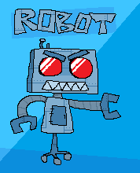
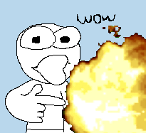
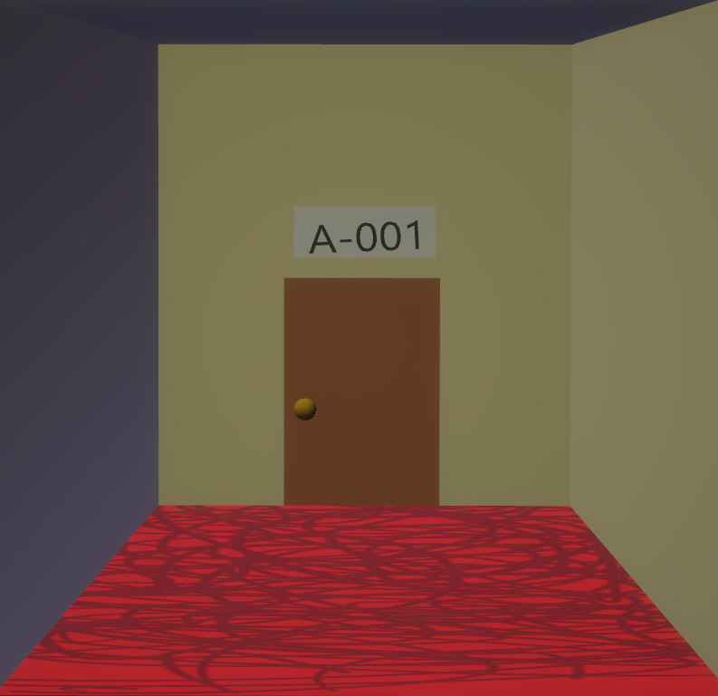
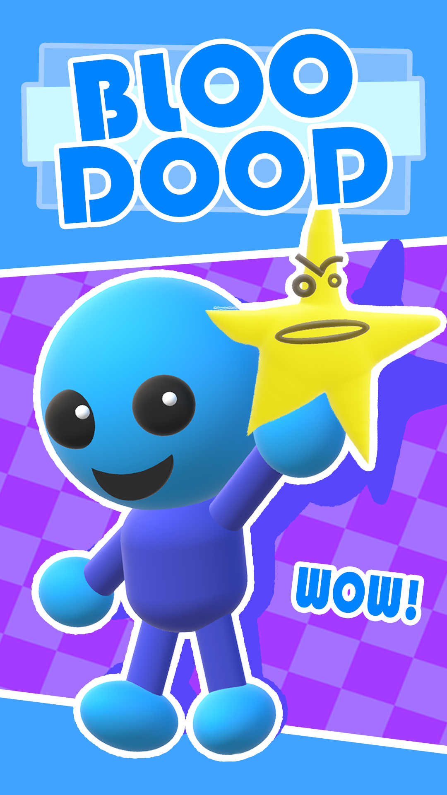

My projects
Here's a bunch of stuff that I worked on! It's gonna mostly be games n' such.

|  | ROBOTROBOT isn't a real game but if it was real it would probably be pretty cool. Words words words wow robot beep boop. Find it on: Itch.io, Steam, and third thing |
Check that outAHGUAYGFGAAGHWhat the heck that guy just got exploded??!!! What happened?! Whatats going on Find it on: Itch.io |
 |
|  | Rooms But Significantly WorseRooms But Significantly Worse is a satire of the numerous Rooms clones that showed up on Roblox after Doors, a game inspired by rooms, became popular. These Rooms clones usually tried to remaster or build upon the original Rooms often were low in quality. Rooms But Significantly Worse leans more into comedy than horror, unlike its predecessors. Find it on: Roblox |
Bloo Dood3D platformer inspired by classics such as Super Mario 64 and Donkey Kong 64! Run and jump your way to collecting all kinds of collectables and save your pet rock from the evil clump of dirt. Doesn't exist. Find it on: Itch.io |
 |